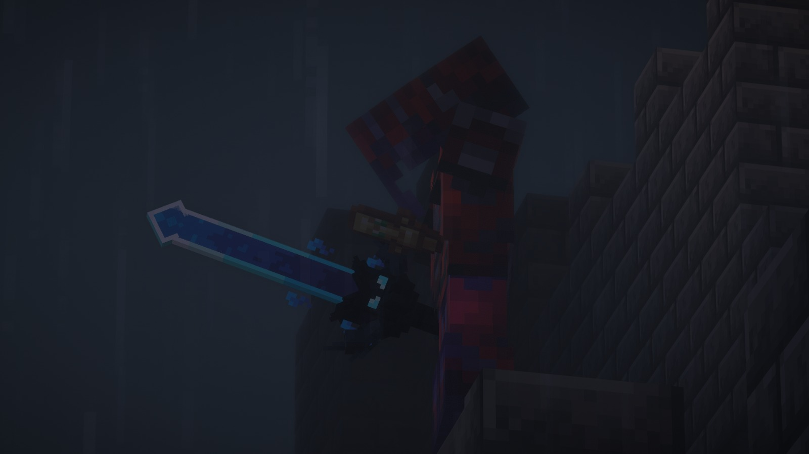
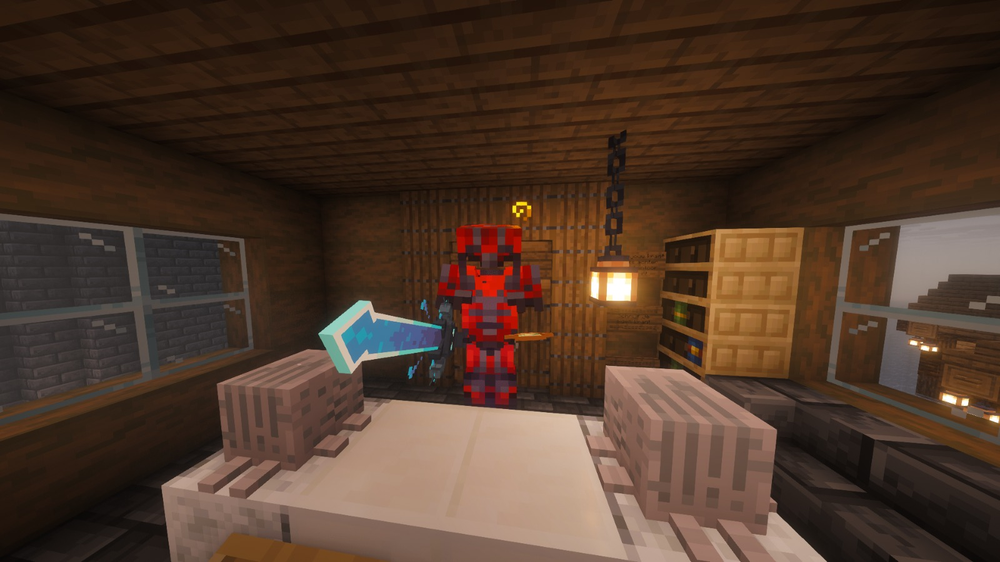
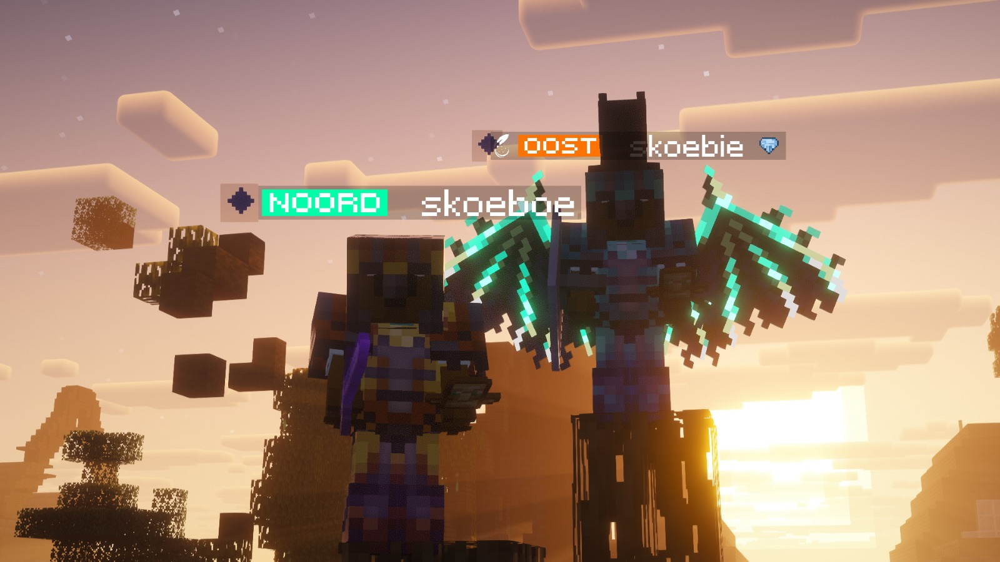
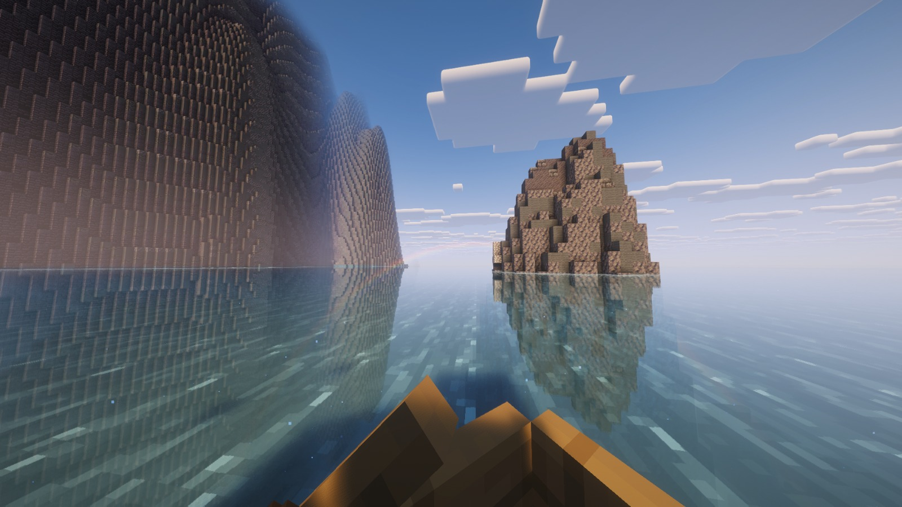
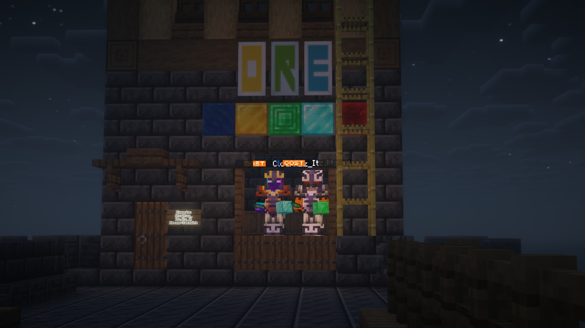

Het nieuws uit Oost & omstreken
De Oostelijke Krant
 JaymianLee
JaymianLeeHet Mysterie van Bandiet, Engel en Cerberus
27-02-2026 · Dossier: invisible fights, meerdere doden, bovennatuurlijke incidenten
De avond van 27 februari verliep extreem onrustig. Meerdere gevechten escaleerden, oude vetes laaiden op en de Bandiet verscheen opnieuw met dezelfde dringende vraag: waar is zijn vader? Deze editie bundelt verklaringen van betrokkenen en correspondenten in één reconstructie.

21:27 - De Bandiet op het kasteel bij het persgebouw
Om 21:27 verscheen de Bandiet op mysterieuze wijze op de spawn van OOST, bovenop het kasteel naast het persgebouw. Tegen de aanwezigen zei hij: “Waar is mijn vader?”. S1EM gooide een wind charge richting de Bandiet. Daarop zette de Bandiet direct de achtervolging in, maar S1EM wist te ontsnappen.
Bandiet in het redactiekantoor: verzoek aan JaymianLee
Even later liep de Bandiet het kantoor van de krant binnen en herhaalde hij zijn vraag naar zijn vader. Hij gaf daarbij expliciet aan dat “zoon IKRA op zoek is naar zijn vader” en vroeg persoonlijk aan JaymianLee om dit in de krant te zetten. Tijdens dit moment schoot Matmonn een pijl op de Bandiet. Dat leidde snel tot vergelding: Matmonn werd kort daarna gedood.

Anonieme bron: “Engel oproepen kan uit de hand lopen”
Om 23:22 meldde een anonieme bron dat er direct contact is geweest met de Engel. Volgens deze bron is de Engel zelfs in hun base gesummoned. De bron waarschuwt dat oproepen op de verkeerde manier levensgevaarlijke gevolgen kan hebben, met onder meer lightning en andere zware incidenten. Tegelijk wordt gesteld dat een succesvolle oproep wel mogelijk is.
Cerberus dringt aan op publicatie Bandiet-artikel
Om 23:42 meldde Cerberus zich bij de redactie, kort nadat het anonieme gesprek was afgerond. Zijn boodschap was duidelijk: “Zorg dat het artikel van de bandiet in de krant komt, dat is belangrijk.”
Cerberus deed daarnaast een stevige uitspraak: “Ik zal altijd meer dan de Engel en de bandiet zijn.” Volgens bronnen is Cerberus te herkennen aan zijn hoofd: een soort wolvenhoofd, gecombineerd met de staf van Cerberus. Wat zijn precieze daden worden, is nog onbekend. De redactie verwacht dat dit niet het laatste hoofdstuk rond Cerberus is.
iXD, MeneerSandwich en de start van de chaos
Volgens de eerste meldingen was iXD onzichtbaar actief op en rond OOST. Kort daarna kwam het bericht dat MeneerSandwich is gedood. De directe aanleiding is nog onbekend. Tegelijk werd gemeld dat iXD achter xT0MAT0x aan zat, ook zonder bevestigde reden.
Ruzie NaFeest vs Stroperig en gevecht met Skoeboe
Team NaFeest en Stroperig hadden al langer spanning. Stroperig was eerder gepopt door Skoeboe en stuurde daarna een uitdagend bericht: “kom 1v1”. Dat duel werd nooit echt afgemaakt. In de daaropvolgende gevechten zaten iXD en Stroperig tegenover MeneerSandwich. Na de fight sloot Skoeboe aan tegen een invisible tegenstander, vermoedelijk Stroperig. Stroperig verloor opnieuw een totem, probeerde weg te pearlen en werd kort daarna alsnog gedood.

21:52 - iXD sterft in gevecht met MrSheep9763
Rond 21:52 stierf iXD na een confrontatie met MrSheep9763. Ooggetuigen stellen dat iXD de aanval opende, waarna MrSheep via een dubbelpop de kill pakte. Eerder op de avond werd MrSheep bij zijn shop al geambusht door een invisible speler. Later werd dit aan iXD en de NaFeest-groep gekoppeld.
West Dorp: pops, lightning en plotselinge nacht
Later werd iedereen naar West Dorp geroepen. In die fase werden S1EM en Roeban gepopt door de Bandiet. Om 22:38 volgde een massaal incident: lightning-inslagen, blindness, omslag van dag naar nacht en plotselinge regen. Volgens meerdere aanwezigen communiceerde Lyara, de engel, op dat moment met de Bandiet.
De Bandiet riep uiteindelijk: “IEDEREEN RENNEN, LYARA DE ENGEL KOMT ERAAN”, waarna opnieuw spelers door lightning geraakt werden.
Tussenbeeld van de avond

Correspondentenhoek
Cloakkzz (27-02): meldt een invisible speler rond 20:40 op OOST spawn, vermoedelijk iXD. MrSheep zou zijn gepopt, de onzichtbare speler verloor later ook een totem en MeneerSandwich werd vermoord. Volgens hem loopt de beoordeling van de moordzaak nog.
Korte veldnotities: Stroperigspookje daagde Skoeboe uit voor een gevecht tot de dood; MeneerSandwich en Cloakkzz_ zouden een diamantenwinkel willen openen; _Businessbear_ is omgekomen; op spawn komt een nieuwe winkel: “Ore Store”.

DrConjo (ingezonden verslag): beschrijft een rustige start van de avond met netheravonturen en bouwbezoek, gevolgd door spanning door onzichtbare spelers.
Aldi_ (ingezonden, context 26-02): bevestigt het eerdere verhaal rond de geheime vulkaankamer en de selectieprocedure voor de End-opening met een groter team.
Vandaag nemen we afscheid van MeneerSandwich. Vriend van de krant, en vriend van JaymianLee. Hij zal voor altijd in onze gedachten blijven.